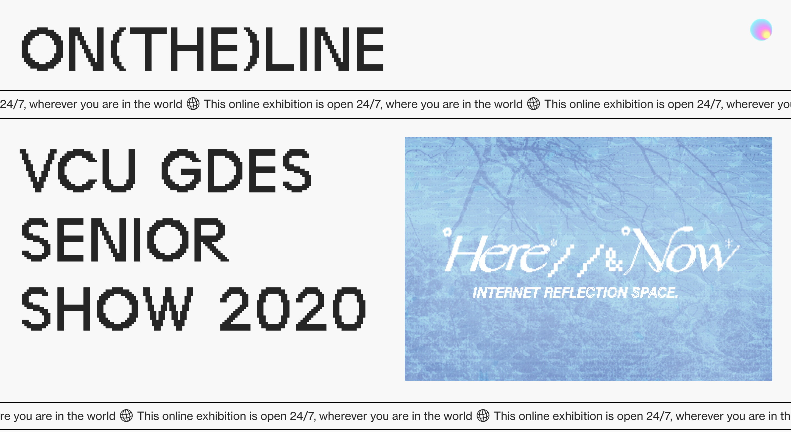
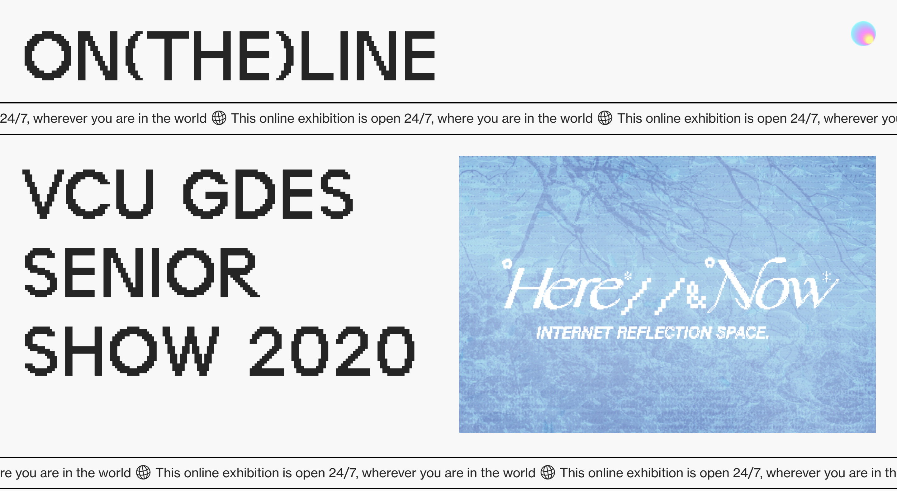
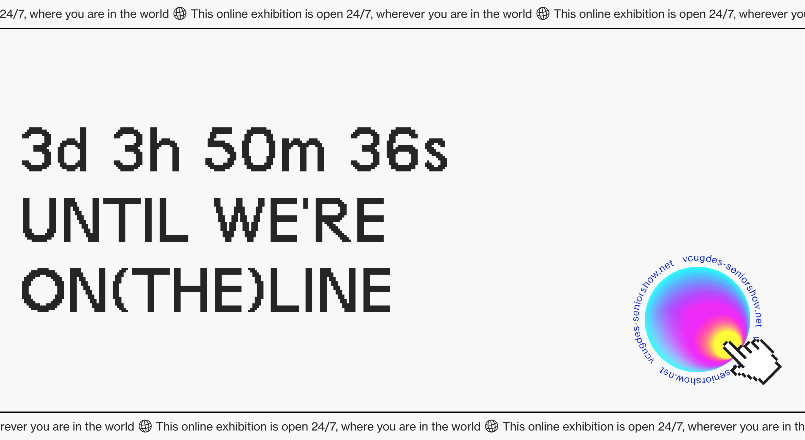

Following the line imagery, I was inspired by the websites of TAMBOURINE and Painting Amongst Other Things. I found it interesting that the former is an ongoing collection whereas the latter is a past event.
The first iterations of the exhibition website play with idea of the letters literally sitting on the line. I liked the idea and color palette but felt the exhibition as a whole looked a bit too reserved for the dynamic works represented.
Then I settled on the current look with marquees which are unique to digital spaces. At one point, I tried setting the whole website at an angle to create a precarious feeling that matches the uncertainty of current events but had issues with responsive design.
Earlier versions of the poster also experiment with the idea of line. The exhibition website essentially serves as a portal to the individual websites of each student, so I visualized this thought into a magical gradient consistent throughout the visual identity.
Back to Project 

Due to the spread of COVID-19, exhibition spaces and galleries are closed but it doesn't mean the end-of-year Senior Show is cancelled. Being natural problem solvers, the graduating seniors of the VCU GDES program were quick to adapt their capstone projects to a digital format. On behalf of the graduating class, I had the opportunity to craft the visual identity of the online exhibition.

I developed the concept of ON(THE)LINE recognizing that:
1. We are walking on the thin line between an end (of college) and a beginning (of new opportunities).
2. Our future might be on the line because of the pandemic.
3. But we are not giving up and still presenting our work online.
Before the exhibition went public, we displayed a countdown on the website as well as gifs on social media slowly revealing the gradient portal.
On the day of the exhibition, we posted the final set of gifs and a hyperlinked poster that teleports visitors directly to the website.
ON(THE)LINE has been live since May 1st, 2020 and will continue to remain open 24/7, wherever you are in the world.
Visit the ongoing exhibition at: vcugdes-seniorshow.net